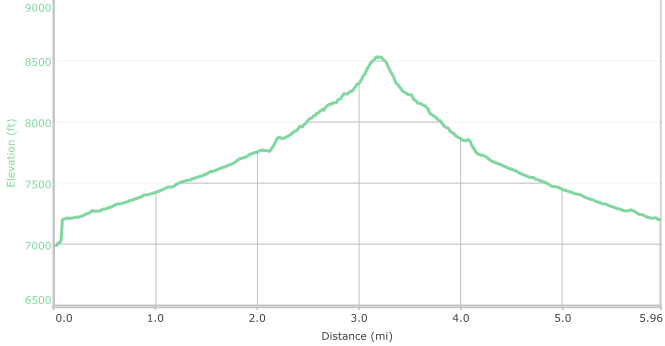

Hike New Mexico
w/ Tom & Ken
Lower Rio En Medio Hike
| Difficulty | Round-trip | Type | Elev. Chg. | Exposure | Wow Factor | Facilities | Seasons | Photos | By Car |
|---|---|---|---|---|---|---|---|---|---|
| Moderate | 6 miles | Out-and-back | 1500 ft | Good shade | Falls | None | Not Winter |
 |
 |



- Oct 13, 2016: Heading towards the unknown
- Oct 13, 2016: Beautiful long cascade
- Oct 13, 2016: Trees really have to climb for the sun!
- Oct 13, 2016: All along the river, cascades babbled happily away
- Oct 13, 2016: The falls most hikers travel to see
- Oct 13, 2016: The falls kept coming!
- https://www.flickr.com/photos/139088815@N08/30029730220/in/album-72157674031342550
- https://www.flickr.com/photos/139088815@N08/30326220545/in/album-72157674031342550
- https://www.flickr.com/photos/139088815@N08/30029782600/in/album-72157674031342550
- https://www.flickr.com/photos/139088815@N08/29695719973/in/album-72157674031342550
- https://www.flickr.com/photos/139088815@N08/29696317414/in/album-72157674031342550
- https://www.flickr.com/photos/139088815@N08/30291573546/in/album-72157674031342550
-- To see more photos: click on
Tom's Flickr Album or
Ken's Flickr Album.
Burnt Mesa, a finger of land, (part of the Pajarito Plateau